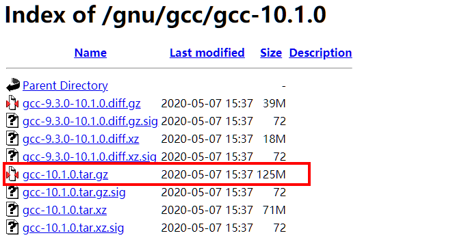
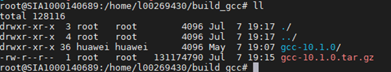
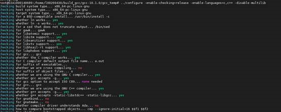

Using GCC of a Later Version
Upgrade the GCC in Ubuntu to GCC 10.1.0.
- Obtain the latest GCC source package.
To obtain the source code package, visit http://ftp.gnu.org/gnu/gcc/gcc-10.1.0.

- Run the following command to decompress the installation package:
tar -xzvf gcc-10.1.0.tar.gz

- Run the following commands to go to the directory generated after the decompression and run the download_prerequisites script:
cd gcc-10.1.0/
./contrib/download_prerequisiles

The download_prerequisites script file is used to download, configure, and install the dependency library.
- Run the following commands to create a directory and save all output to the directory:
mkdir gcc_temp
cd gcc_temp
../configure -enable-checking=release -enable-languages=c,c++ -disable-multilib

- Perform compilation and installation,
- Run the following command to perform the compilation:
The compilation process may last one to two hours. Pay attention to the time arrangement before the compilation.

- Start the installation.
- Run the following command to perform the compilation:
- Verify the installation.
Run any of the following commands to check the GCC version:
gcc --version
gcc -v
g++ -v
If the displayed GCC version is earlier than the required version, restart the system. Alternatively, run the which gcc command to check the GCC installation directory, and then run the /usr/local/bin/gcc -v command to check the version information. Generally, the GCC is installed in the directory.
Figure 2 Installation success page